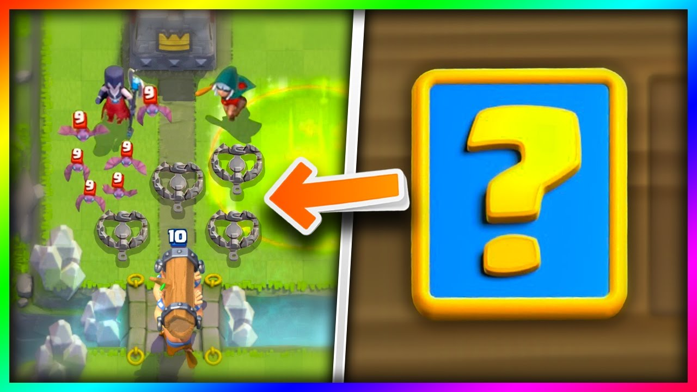
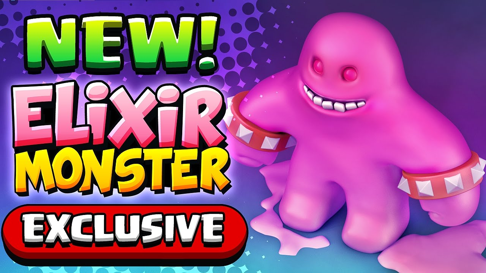

Skins
(THE FOLLOWING IS INFO LEAKED BY OPEGIT STUDIO, A VERY TRUSTED TEAM FOR LEAKS AS THEY HAVE BEEN CORRECT IN THE PAST MANY TIMES)
After the last update, CR appeared skins for the towers. Now in the game files there is only one skin - the golden towers of princesses. Most likely, it can be obtained for passing the test "Gold Rush". It is not known when it will be.
Other skins mentioned: King's Tower, Barbarian Tower, Bone Tower, Goblin Tower, Cabana Tower, Ice Tower, Tropic Tower, Legendary Tower, PEKKA Tower, Royal Tower, Sworn Tower, Training Tower, Work Tower, Pony Tower.
Skins can be sold for crystals.
Chances of recieving skin from chests:
Magical - 0.001%
Giant - 0.0001%
Super magical - 100%
Of the other chests it seems impossible to get the skin.
Leaked Cards
There have been many different leaks lately around what cards will come to the arena next, but there are 2 cards in particular that seem to be floating around social media. That is the "Trap" and the "Elixir Monster" as shown in the images below.
We don't yet know how these cards are going to function in the game or what types of troops they are, all we know is that they look pretty cool.
More info will be given soon about these new cards and hopefully it won't be long until we see some gameplay of these troops or play with them ourselves.

It's a trap! Watch your feet.

He drinks exlixir day and night... then explodes!